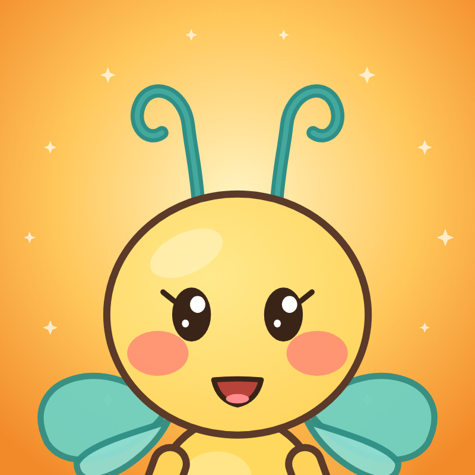

Flitty's Big Why
Big questions. Happy answers.
Flitty's Big Why is an animated science show for curious kids aged 4 to 7. Each episode answers one real question kids ask, like why the Moon changes shape or why bats sleep upside down, with a guess-along, a song, a move-along and a try-it to do with a grown-up.
About the Flitty's Big Why Uploader
The Flitty's Big Why Uploader is a private tool used only by the channel owner. It publishes our own finished episodes and Shorts to our own YouTube channel and our own Facebook Page and Instagram account, after the owner approves each episode.
It does not sign in anyone else, does not read viewers' data, and is not offered to the public.